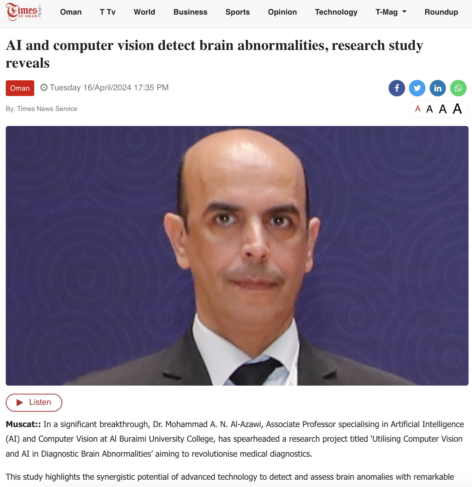
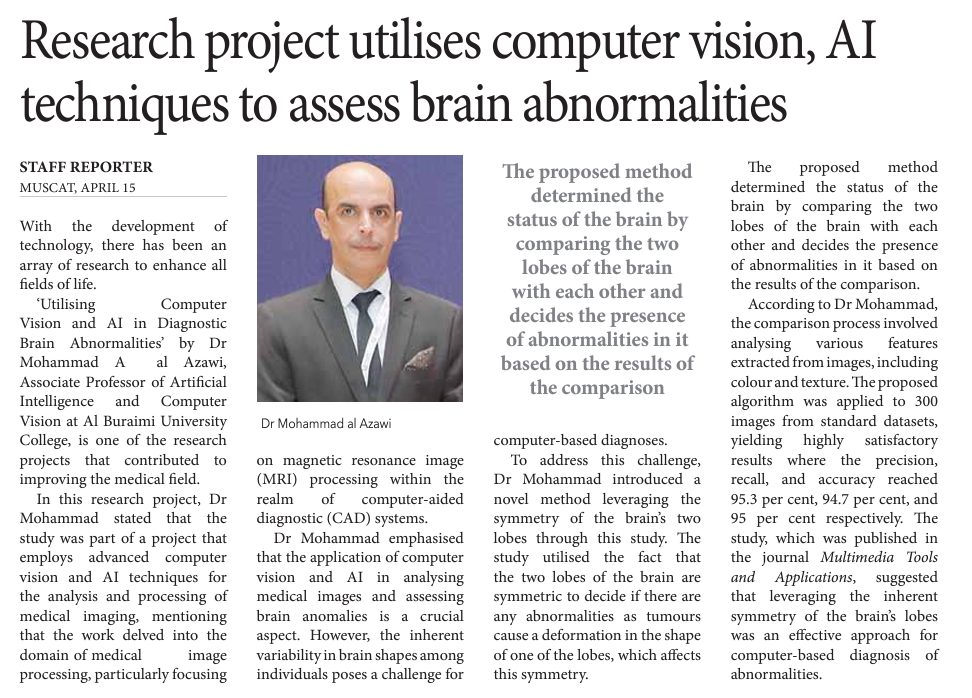
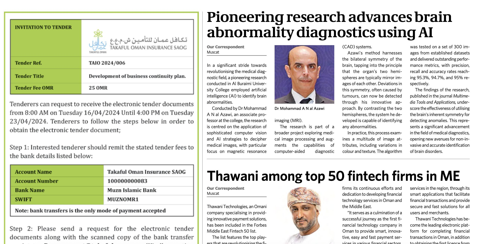
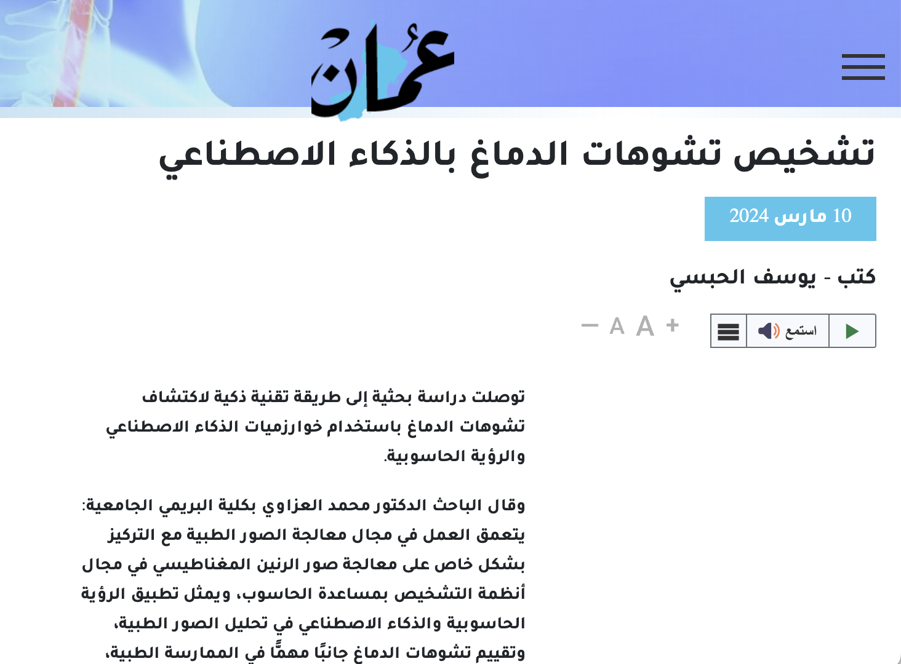

Times of Oman
AI and computer vision detect brain abnormalities, research study reveals.
Selected media and news coverage of research and academic activities.
Selected media coverage highlighting work on artificial intelligence, computer vision and brain abnormality identification.

AI and computer vision detect brain abnormalities, research study reveals.

Research project utilises computer vision and AI techniques to assess brain abnormalities.

Pioneering research advances brain abnormality diagnostics using AI.

Arabic media coverage of AI-based brain abnormality diagnosis.